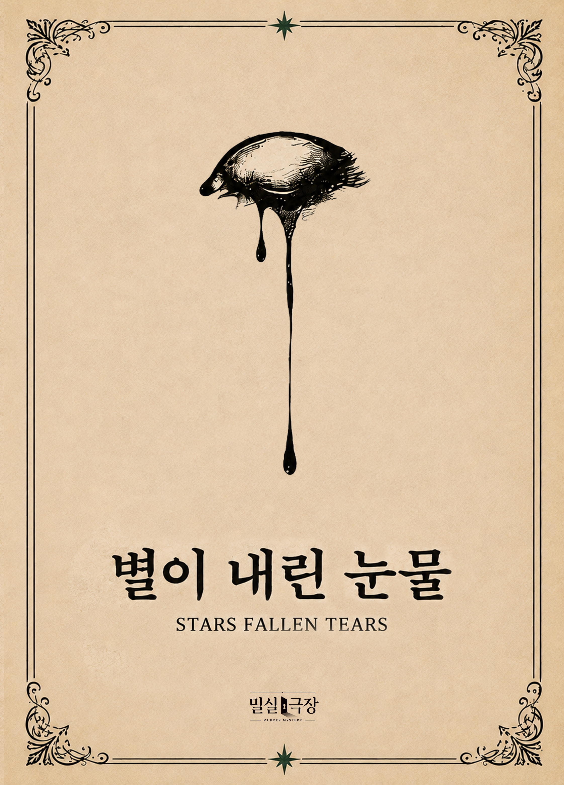

별이 내린 눈물
엔딩페이지입니다.
엔딩 단계에서만 확인하세요.

엔딩페이지입니다.
엔딩 단계에서만 확인하세요.
THE FINAL VOTE
투표에서 범인으로 최다 득표한 인물을 선택하세요.
ENDING
에밀이 기밀 문서 2개를 소지하고 있습니까?
ENDING CONDITIONS
공개된 단서를 선택해 주세요.
ENDING CONDITIONS
알베르트가 유대인 중
누구를 포박했습니까?
THE END
EPILOGUE
에필로그를 확인하고 싶은 인물을 선택하세요.
THE TRUTH
1944년 4월 30일, 독일에 있는 제7 연구소에서 일어난 살인사건의 전말은 이렇습니다.
제7 연구소의 ‘벨 시스템’은 사실 공간이동만을 위한 이론이 아닙니다. 정보를 충분히 교환하고 찾아내셨다면 ‘벨 시스템’은 인체를 전자기적으로 ‘해체’한 후, ‘재구성’하는 기술이라는 것을 알 수 있습니다. 소장의 말을 빌리면 다시 부활하는 개념과도 흡사합니다.
하인리히는 ‘공간이동’을 목적으로 개발했기 때문에, 기술에 숨겨진 잠재력을 생각하지 못 합니다. 그런 점에서 클라우스 소장은 하인리히가 이 기술의 진정한 주인이 될 수 없다고 생각합니다. 피조물의 본질을 태어나게 하지 못했기 때문입니다.
클라우스 소장은 하인리히의 기술을 훔쳐 자신이 이 기술의 진정한 주인이 되려고 합니다. 이를 위해 소장은 ‘벨 시스템’의 단점을 해결해주겠다며 하인리히를 설득합니다. 하지만 그 해결책은 유대인을 학살하는 것이었습니다. 공간이동 에너지를 충당하려고 유대인을 죽이고 그들의 신체에서 에너지를 빼내는 것입니다.
소장의 목적이자 비밀은 ‘벨 시스템’의 원리인 ‘신체의 재구성’에서 ‘재’를 뺀 ‘신체의 구성’입니다. 즉, 클라우스 소장은 이 연구소에서 클론을 생산하는 것이 목적이었습니다.
한편, 소장의 실험은 진행할수록 에너지가 점점 소실되어갑니다. 소장은 유대인의 신체를 분해하는 것으로 에너지 부족을 해결하려 했지만, 인간 한 명의 신체를 분해해도 평생 형태를 유지할 전자기력을 생산할 수 없었습니다. 따라서 공간이동 실험을 할 때마다 수십, 수백의 생명을 해쳐야 했습니다.
결과적으로 소장은 여전히 ‘재구성’의 프레임에서 벗어날 수 없었습니다. 그래서 소장은 이런 에너지 소실을 극복하기 위해 약물을 개발하게 됩니다. 그 약물이 바로 ‘복합 전도체 용액 (Compound C-9)’입니다. 소장은 이 약물을 이용해 수많은 인간을 희생시켜도 얻을 수 없던 양의 에너지를 단숨에 얻어내고 1.3%라는 여분의 에너지까지 비축하게 됩니다.
여기서 희망을 본 소장은 또 다른 희소식을 듣게 됩니다. 그건 바로 빌헬름의 의식에 생긴 부작용이었습니다. 빌헬름에게는 비극적인 사건이지만, 소장에게는 희소식이었습니다.
소장은 빌헬름 안에 잠식된 희생된 유대인의 잔여 의식들을 이용한다면, 클론의 의지를 만들어낼 수 있을 것이라고 여겼습니다. 따라서 그는 이를 위해 빌헬름을 곁에 두고 비밀스럽게 연구하게 됩니다.
빌헬름 안에 살아있던 유대인들의 의식은 자신들을 학살한 소장에게 큰 증오를 품고 있었습니다. 그들은 점점 빌헬름을 잠식하기 시작했고, 시간이 지나 소장은 결국 잠식된 빌헬름에 의해 목을 찔리게 됩니다.
하지만 소장은 이 때 이미 죽어있었습니다. 이에 대한 근거는 소장이 누워있던 자리 외에는 피의 흔적이 없다는 단서와 소장의 피가 검은 색이라는 묘사로부터 추측할 수 있습니다.
빌헬름이 소장을 찌르기 바로 직전, 소장은 알베르트에 의해 내부가 파열되어 사망합니다. 물론 알베르트는 이런 방식으로 그를 살해할 생각은 없었습니다.
알베르트는 경비로 근무하며 연구소에서 의심스러운 돈의 흐름을 포착했습니다. 그는 물품 반입/반출 기록부를 통해 연구소가 배정받은 예산보다 더 많은 돈을 사용하고 있다는 것을 알게 되었습니다. 이를 알게 된 즉시 알베르트는 소장에게 보고했으나, 횡령의 범인은 소장이었습니다. 따라서 소장은 알베르트를 상대해주지 않았고, 이에 의심이 점점 커지던 알베르트는 결국 국가의 이름으로 소장을 살해할 계획을 세웠습니다.
알베르트는 과거 소장이 공간이동 피험자가 됐음을 알게 되었고, 그에게서 입자 식별 코드를 훔쳤습니다. 그리고 사건 당일, 알베르트는 공간이동을 이용해 노커룸으로 소장을 불러내고 고문도구로 그를 추궁하고자 했습니다. 그리고 만약 그가 국가의 돈을 횡령한 범인이 맞다면 자신의 손으로 그를 처단하고 자신도 목숨을 끊을 작정이었습니다.
이 때, 알베르트는 하인리히가 근육 이완제를 주사했다는 사실은 커녕 하인리히의 논문 내용조차 알 수 없었습니다. 하인리히의 논문 내용에는
‘(생략) ... 이러한 결함은 극단적일 경우 신체가 불완전하게 절단이 된 채로 공간이동하게 되며, 피험자는 그 즉시 사망에 이른다.’
라는 내용을 확인할 수 있습니다. 결국 알베르트는 공간이동을 작동시켜 소장을 직접적으로 살해합니다. 하지만 이 시점의 알베르트는 횡령의 진실을 알 수 없었기에, 자신이 그저 살인자라는 오명을 뒤집어썼다고 생각합니다.
경비로 좌천된 불명예스러운 과거의 상처를 갖고 있던 알베르트는 그 고통을 다시 겪고 싶지 않았습니다. 때문에 알베르트는 소장의 잔해를 없애고 피를 닦았습니다.
결국 소장에게 치명적인 상해를 입혀 사망에 이르게 하고 증거인멸까지 시도했으므로 진범은 알베르트입니다.
현장에 남겨진 족적 중 범인은 없었습니다. 족적의 수는 총 세 쌍이었습니다. 그리고 그 주인은 각각 빌헬름, 율리안, 에밀입니다.
빌헬름은 소장의 목을 찌르고 도망나오는 과정에서 족적을 남겼습니다.
율리안은 캐비넷에 있는 실험체 명단과 에너지 생산 기록부를 빼돌리기 위해 현장에 찾아갔습니다.
에밀도 목적이 같았습니다. 다만, 그의 목적은 정확히 정보였으므로 미리 온 율리안에게 문서를 빼앗기게 되자, 소장의 시체 안 주머니를 뒤지게 됩니다. 그 과정에서 그는 장갑에 피를 묻히게 됩니다.
소장의 책상에 있는 음료는 하인리히가 놓아둔 것입니다. 전역한 후, 인생 절반을 연구에 바쳐 신체가 뛰어나지 못한 그는 근육 이완제를 이용하여 신체적 우위를 가져가려 했습니다. 신체적 우위를 가져가야 했던 이유는, 하인리히가 소장을 유대인을 분해하는 방으로 유인해 제압하고 분해하려 했기 때문입니다.
소장의 개인 서랍과 업무 서랍을 개방했다면 그 안에 나오는 ‘별’과 유대인 여성에 대한 이야기를 발견할 수 있습니다. 이는 베라의 어머니, ‘스텔라’를 돌려서 말하는 것입니다.
베라의 어머니 스텔라는 ‘복합 전도체 용액 (Compound C-9)’의 실험 대상으로 희생됐습니다. 그에 대한 감사의 표현으로 클라우스 소장은 임상 실험 기록에 그녀의 이름을 “별(스텔라)”이라고 기록해두었습니다.
‘실험실’ 안쪽 ‘노크룸’과 배수구에서 발견된 혈흔은 소장의 것입니다. 알베르트가 벨 시스템을 이용해 클라우스 소장을 소환하려 했으나, 근육 이완제가 투여 된 탓에 오류가 발생해 그의 내장과 일부 살점, 그리고 뼛조각만 공간이동 하게 됐습니다.
알베르트는 이를 깨닫고 미리 가져왔던 고문 도구로 그의 흔적을 전부 처리합니다. 이 때 고문 도구에 피가 묻게 됩니다.
작품의 등장인물들은 전부 족쇄를 갖고 있습니다.
빌헬름은 리젤을 홀로 버리고 왔다는 죄책감을,
율리안은 혈통에 대한 비관을,
힐데는 어린 아이로서의 의존을,
하인리히는 유대인 학살과 희생된 스텔라에 대한 죄책감을,
알베르트는 살해로 인한 죄책감을,
에밀은 잠입한 스파이로서의 불안을 갖고 있습니다.
따라서 각 인물들은 전반적으로 조금 뒤틀려있을 뿐, 자신의 족쇄를 해소하게끔 목적이 설계되어 있습니다.
빌헬름은 리젤을 대신해 힐데에게 호의를 베푸는 것.
율리안은 혈통을 무시당하지 않도록 높은 지위에 서는 것.
힐데는 사라진 엄마를 찾아내고 다시 엄마에게 의존하는 것.
하인리히는 연구소의 비밀을 감추고 힐데와 살아가는 것.
알베르트는 스스로를 속이고 타인에게 책임을 전가하는 것.
에밀은 연구소의 어떤 비밀이든 찾고 이 연구소로부터 탈출하는 것.
본 게임은 각 인물들의 뒤틀린 목적을 좌절시키고 서로 협력하는 방향으로 설계되어 있습니다. 그리고 플레이어들의 뒤틀려있던 목적이 일부 좌절되고 서로 협력할수록 엔딩은 진엔딩에 가까워집니다.
여러분의 플레이는 어떠셨나요? 더 자세한 사건의 진상이 궁금하다면 서로의 목적과 행동을 공유해보세요.